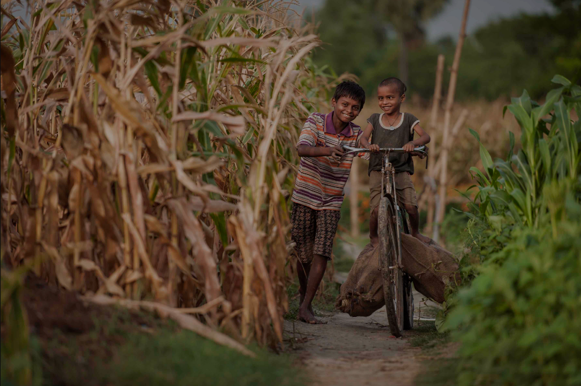

<!-- <div class="banner-img-normal background-img-custome">
    <!--  -->
<!-- </div>
<div class="banner-text">
    <div class="container text-white">
        <div class="row banner-inner">
            <span class="banner-square"></span>
            <h1 class="dg-header-1 banner-title">Emerging Innovations
                
            </h1>
            <h5 class="dg-header-5 banner-details">
                It’s in our nature to ask questions – especially ‘What if?’ and ‘Why not?’. Our Emerging
                Innovations is where we experiment and explore, trying out new tools and novel approaches to
                solving intractable problems. Many are non-starters, and we’re fine with that.
            
            </h5-->
            </h5>
        </div>
    </div>
</div>     


<div class="custom-class-slideshow global-impact-blocks">
    <div class="globalimp-list">

        <div class="single-img-container" id="community-videos">
            <div class="container-fluid">
                <div class="row">
                    <div class="col-md-6 left-block upper-left-block" style="display: none;">
                        <div class="row img-details">
                            <div class="single-img">
                                <div class="side-gray-border">
                                    <h3 class="dg-header-2 sub-section-title">Actionable weather forecasts                                                    <span class="half-squre-before-title"></span>
                                    </h3>
                                </div>
                            </div>
                        </div>
                    </div>
                    <div class="col-md-6 right-block global-initiatives-right-block">
                        <div class="img-right-part">
                            <div class="image-green-shadow">
                                 
                                
                            </div>
                        </div>
                    </div>
                    <div class="col-md-6 left-block">
                        <div class="row img-details">
                            <div class="single-img">
                                <div class="side-gray-border">
                                    <h3 class="dg-header-2 sub-section-title lower-left-block">Actionable weather forecasts                                                    <span class="half-squre-before-title"></span>
                                    </h3>
                                    <div class="single-img-content">
                                        <p class="dg-header-5 text-details">In Andhra Pradesh, India, we provide actionable weather forecasts - weekly, village-level forecasts paired with specific advisories for groundnut farmers, especially critical for farmers in dryland areas. Although some farmers were receiving SMS-based weather forecasts, they typically didn’t know what the forecasts meant for their crops, or what action they should take in their fields. High listen and call-back rates show strong demand, and we’re exploring offering similar services in other geographies.                                                    </p>
                                    </div>
                                    <a href="https://www.digitalgreen.org/india/" class="custom-green-bordered-button learn-more" target="_blank">Explore Now</a>
                                    
                                    

                                </div>
                            </div>
                        </div>
                    </div>
                </div>
            </div>
        </div>
                 